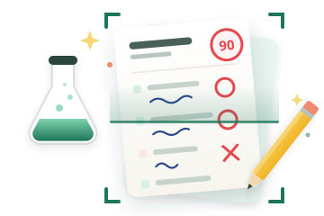

TODAY'S PROGRESS
오늘 24장의 시험지를
차근차근 정리했어요.
OCR이 먼저 읽고, 선생님은 애매한 답만 확인하세요.
현재 검토 대기 시험지는 2장입니다.

TODAY'S PROGRESS
OCR이 먼저 읽고, 선생님은 애매한 답만 확인하세요.
현재 검토 대기 시험지는 2장입니다.

오늘 채점 완료
24 장직접 검토 필요
2 장THIS WEEK
총 0장
NEEDS REVIEW
RECENT
| 채점일 | 학생 | 시험지 | 점수 | 상태 |
|---|
THIS MONTH
GRADING ARCHIVE
학원, 클래스, 카테고리, 학생별로 시험지 원본과 결과를 관리합니다.
| 채점일 | 학생 | 학원 / 클래스 | 시험 카테고리 | 시험지 | 상태 |
|---|
STUDENT DIRECTORY
학원과 클래스별 학생 계정, 최근 성적, 업로드 현황을 관리합니다.
| 신청일 | 이름 | 학년 | 이메일 | 휴대폰 | 본인인증 | 클래스 배정 | 처리 |
|---|
대기 중인 가입 신청이 없습니다.
EXAM CATEGORIES
학교급, 과목, 단원을 기준으로 시험지를 체계적으로 분류합니다.
시험 카테고리와 클래스를 기준으로 담당 선생님을 지정합니다.
| 시험 카테고리 | 클래스 | 담당 선생님 | 역할 | |
|---|---|---|---|---|
| 화학 I · 산화 환원 | 고2 화학 I | 주 담당 | ||
| 중등 화학 · 이온 | 중3 화학 심화 | 주 담당 | ||
| 통합과학 · 물질 | 고1 통합과학 A | 보조 |
SETTINGS
학원 정보와 채점 정책을 관리합니다.
SYSTEM SETTINGS
모든 학원에 공통 적용되는 설정을 관리합니다.
변경 이력 검색결과 총 0건
| 그룹코드 | 그룹명 | 속성키 | 속성명 | 변경값 | 액션 | 이전값 | 변경일시 | 변경자 |
|---|
MY TEST HISTORY
올린 시험지를 확인하고, 준비가 끝났을 때 직접 채점을 시작하세요.
WELCOME BACK
아직 계정이 없나요?
화면 기획용입니다. 아무 이메일·비밀번호로 들어갈 수 있고, 승인 대기 중인 이메일로 로그인하면 대기 안내가 나옵니다.